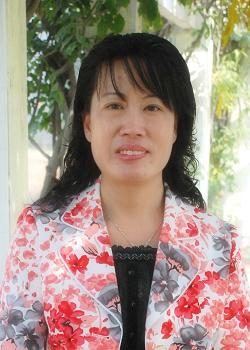

教学名师 柳淑花

（一）个人简介柳淑花，1965年2月生，汉族，山东高密人，教授。山东省第十届、十一届政协委员，青岛市市南区第十五届人大代表，青岛市李沧区第四届、五届、六届政协委员。（二）从事专业软件技术（三）主要教授课程1．数据库原理与应用（SQL Server）；2．Visual C#程序设计；3．ASP.NET动态网页制作；4．Excel高级操作。（四）本人教学成果1. 2012年度省级基金项目《山东省高校人文社会科学研究计划“高职学生移动学习实证研究...
详情→教学名师 张玲
（一）个人简介张玲，山东青岛人，汉族，副教授。2001年毕业于山东师范大学信息工程系，获学士学位，2004年毕业于中国海洋大学工程学院，获得硕士学位，2004年6月到我院任教，曾任软件技术专业带头人，青岛市中高职专业办学联盟项目负责人，山东省优质校建设信息技术与软件外包专业群联系人等。（二）从事专业软件技术专业，主攻应用软件研发与教学（三）主要教授课程C语言程序设计，数据结构，JAVA语言程序设计，ASP.NET开发技...
详情→青年技能名师 莫新平
（一）个人简介莫新平（1979-），山东夏津人，硕士，副教授，信息工程系副主任。（二）研究领域计算机教学、办公自动、多媒体设计与制作、教育信...
详情→